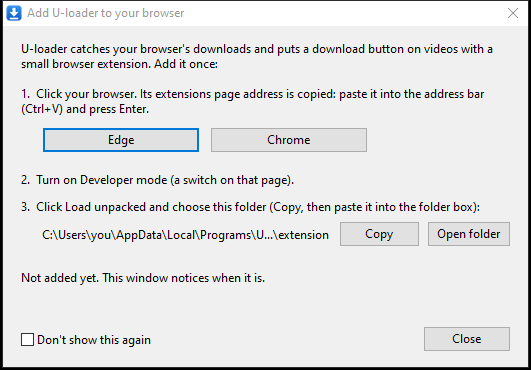
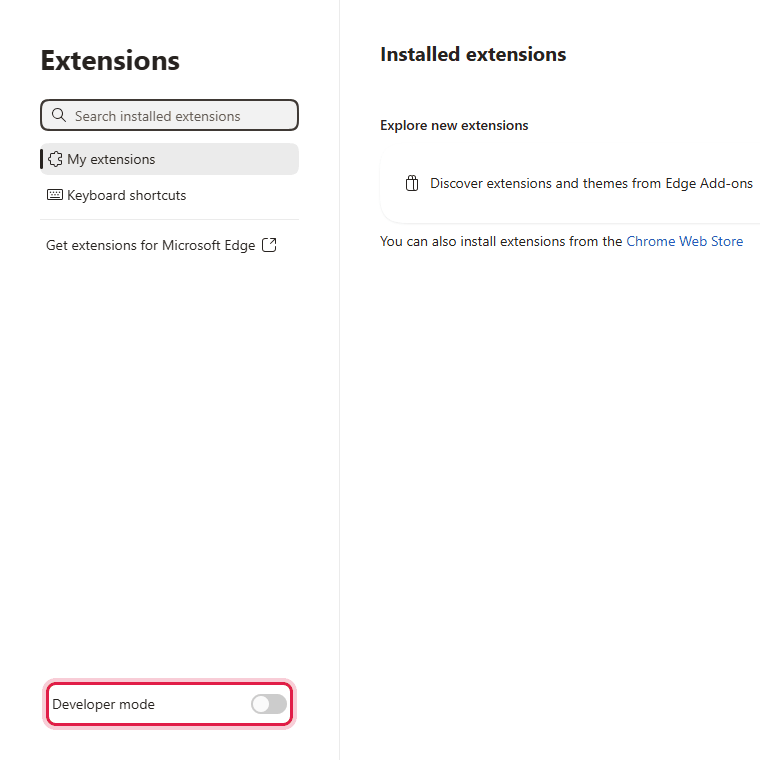
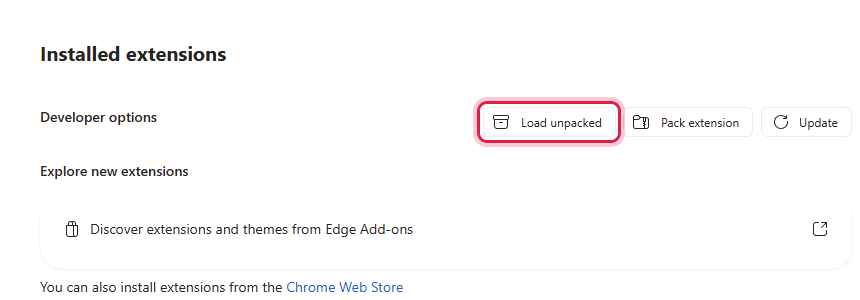
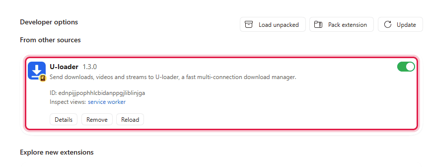
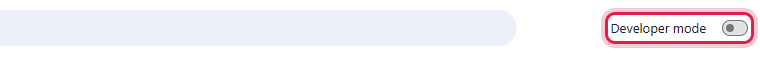
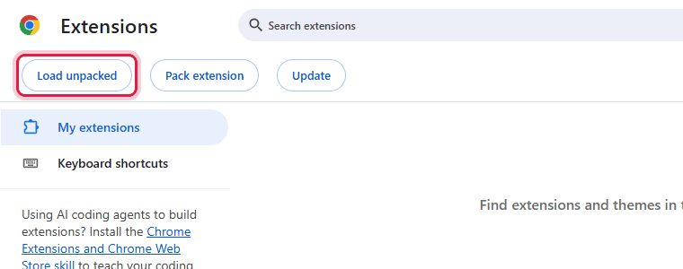
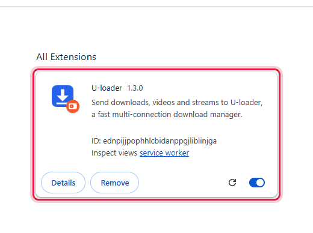
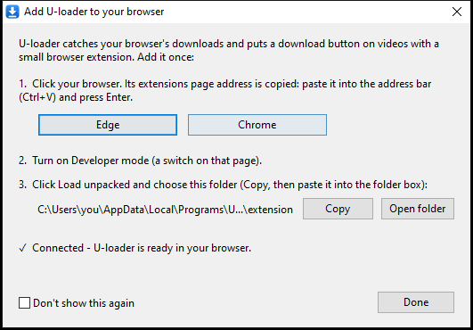

U-loader
A fast download manager for Windows, with a browser extension and video-site support.
Version 1.3.0 · Windows 10 and 11 (64-bit) · 53 MB · free for non-commercial use
What's new and older versions
Install
- Click Download for Windows. If your browser says the file isn't commonly downloaded, choose … → Keep.
- Open
U-loader-Setup-1.3.0.exeand click I agree → Next → Install. It installs for your Windows account only, with yt-dlp, FFmpeg and Deno included. - If Windows says "Windows protected your PC", click More info → Run anyway.
Add U-loader to your browser
The extension catches your downloads and puts a download button on videos. Browsers only let you add an extension from outside their store by hand, so it takes these steps once. U-loader opens a window with the same steps the first time it starts.
In U-loader's window, click Edge or Chrome. Your browser opens and the address of its extensions page is copied.

Click the address bar, paste (Ctrl+V) and press Enter. Or type the address yourself:
Then follow the pictures for your browser:
Microsoft Edge
Turn on Developer mode, at the bottom left.

Click Load unpacked.

A folder window opens. In U-loader's window click Copy, paste the folder into the Folder box and click Select Folder.
U-loader is now in the list.

Google Chrome
Turn on Developer mode, at the top right.

Click Load unpacked.

A folder window opens. In U-loader's window click Copy, paste the folder into the Folder box and click Select Folder.
U-loader is now in the list.

U-loader's window says Connected. That's it: download a file as usual, or hover over a video and click the U-loader button.

Your data
The U-loader program and its extension collect nothing about you: no accounts, no analytics, no tracking. Your downloads, settings and history stay on your computer.
- The extension sends links only to the U-loader program on your own computer, and only for downloads you start or that it catches. With a link it passes that site's cookies, so downloads that need you to be signed in work.
- The program connects only to the sites you download from, and once a day to GitHub to check for a new version (you can turn that off in Settings).
- This website (not the program) uses Google Analytics to count visits.
Details: privacy policy.
License
U-loader is free to use, study and change for non-commercial purposes, under the PolyForm Noncommercial License 1.0.0. Commercial use is not allowed. The setup also includes yt-dlp, FFmpeg and Deno, which keep their own licenses.